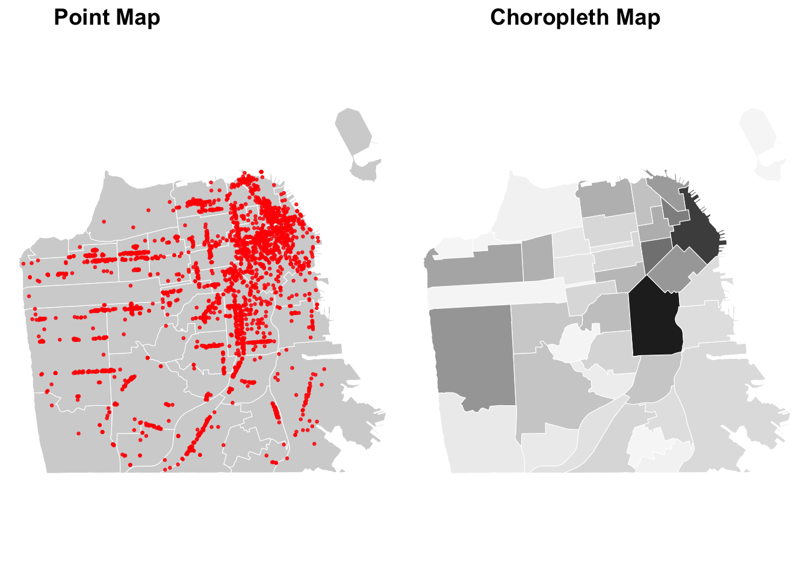

Chapter 3 From People to Built Environment
So far, we have focused on embedding demographic data into places. However, sociological questions beyond people. People don’t just exist in places but they interact with the built environment, such as schools, local businesses, landmarks, and so forth. In GIS terms, this type of data can be called point-of-interest (POI), meaning a specific point location or useful site, defined by geographical coordinates (latitude and longitude). In this tutorial, we will use Airbnb and local business data as an example of point-of-interest data.
3.1 Transforming Airbnbs
When the data contains the latitude and longitude, we can simply transform it to sf object by using “st_as_sf” command. We will use the San Francisco Airbnb data to illustrate this case. Unlike neighborhood boundaries of which geometries were polygons, these geometries will be points.
# Import the Airbnb data
sfbnb <- read.csv("data/sfbnb.csv")
# Transform lat/long data into sf object
sf_sfbnb <- st_as_sf(sfbnb,
coords = c("longitude", "latitude"),
crs = 4326 # specify the projection; WGS84 is a standard projection for global mapping.
)# Check variables
head(sf_sfbnb, n=3)## Simple feature collection with 3 features and 7 fields
## Geometry type: POINT
## Dimension: XY
## Bounding box: xmin: -122.4525 ymin: 37.74511 xmax: -122.421 ymax: 37.76931
## Geodetic CRS: WGS 84
## id trt10 analysis property_type review_scores_rating
## 1 958 16700 haight ashbury Apartment 97
## 2 5858 25300 bernal heights Apartment 98
## 3 7918 17102 haight ashbury Apartment 85
## review_scores_location number_of_reviews geometry
## 1 10 176 POINT (-122.4339 37.76931)
## 2 10 111 POINT (-122.421 37.74511)
## 3 9 17 POINT (-122.4525 37.76669)You can see that geometry is points, rather than polygons. Each point represents an Airbnb property (id- unique identifier). It also indicates the census tract (trt10) and neighborhood name (analysis) in which the Airbnb property is located. The data also contains attributes of the Airbnb property, such as property type, review score ratings, and the number of reviews.
# Export the Airbnb data as a geojson file
st_write(sf_sfbnb, "processed-data/airbnbs.geojson", driver = "GeoJSON", delete_dsn = TRUE)3.2 Geocoding Restaurants
Sometimes, your data may not have the latitude and longitude information. Instead, the data may contain street addresses. In such a case, we have to perform geocoding which converts formatted addresses into latitude and longitude. Below, we use the restaurant data in San Francisco to demonstrate the geocoding process.
# Import restaurant data
sfbiz <- read.csv("data/sfbiz_clean.csv")
# Check if lat and lon exists
head(sfbiz, 3)## company address_line_1 city zipcode
## 1 JOHN'S GRILL 63 ELLIS ST SAN FRANCISCO 94102
## 2 TAD'S STEAKHOUSE 120 POWELL ST SAN FRANCISCO 94102
## 3 SAM'S GRILL & SEA FOOD RSTRNT 374 BUSH ST SAN FRANCISCO 94104
## naics8_descriptions employee_size_location sales_volume_location state
## 1 FULL-SERVICE RESTAURANTS 20 1424 CA
## 2 FULL-SERVICE RESTAURANTS 19 1353 CA
## 3 FULL-SERVICE RESTAURANTS 35 2491 CAIn this data, we can see that latitude and longitude does not exist. However, it contains street address, city, state, and zip code. To carry out geocoding, first, we have to create a field that displays a full address. Based on the full address, we can get the latitude and longitude via open street map (osm). Once the data is geocoded, we can transform this data frame to sf object for mapping.
# Set up
library(tidygeocoder)
# Create a full address field (street address, city, state, zipcode)
sfbiz <- sfbiz %>%
mutate(full_add = paste(address_line_1, city, state, zipcode, sep = ", "))
# Geocode the full address
geocoded_sfbiz <- sfbiz %>%
sample_n(5) %>% # the full data can take a while, so let's try on a smaller sample
geocode(address = full_add, method = 'osm')
# Check the geocoded data
geocoded_sfbiz %>%
select(lat, long)## # A tibble: 5 × 2
## lat long
## <dbl> <dbl>
## 1 37.8 -122.
## 2 37.8 -122.
## 3 37.8 -122.
## 4 37.8 -122.
## 5 37.8 -122.# For the purpose of this tutorial, we can use the prepared, full geocoded data
prep_sfbiz <- read.csv("data/geocoded_sfbiz_clean.csv")
# Transform lat/long data into sf oject
sf_sfbiz <- st_as_sf(prep_sfbiz,
coords = c("long", "lat"),
crs = 4326)# Export the restaurant data as a geojson file
st_write(sf_sfbiz, "processed-data/restaurants.geojson", driver = "GeoJSON", delete_dsn = TRUE)3.3 Spatial join
Spatial join allows you to combine two sf objects based on the spatial relationship between their geometries. For example, we can think of the relationship between neighborhoods (polygons) and restaurants (points).
- Neighborhoods (x) contain restaurants (y), or
- restaurants (x) are within neighborhoods (y).
# Before joining, check if they have the same projections
st_crs(sfnh) == st_crs(sf_sfbiz)## [1] TRUE# Perform spatial join
nh_joined <- st_join(x = sfnh, # join
y = sf_sfbiz, # target
join = st_contains, # does x(polygon) contains y(point)?
left = TRUE) # keep all neighborhoods
# Explore
head(nh_joined, 3)## Simple feature collection with 3 features and 10 fields
## Geometry type: MULTIPOLYGON
## Dimension: XY
## Bounding box: xmin: -122.4428 ymin: 37.77644 xmax: -122.4202 ymax: 37.79037
## Geodetic CRS: WGS 84
## nhood company address_line_1
## 1 Western Addition HINATA SUSHI 810 VAN NESS AVE
## 1.1 Western Addition BURGER KING 819 VAN NESS AVE
## 1.2 Western Addition ISTITUTO ITALIANO DI CULTURA 601 VAN NESS AVE # F
## city zipcode naics8_descriptions employee_size_location
## 1 SAN FRANCISCO 94109 FULL-SERVICE RESTAURANTS 6
## 1.1 SAN FRANCISCO 94109 FULL-SERVICE RESTAURANTS 58
## 1.2 SAN FRANCISCO 94102 FULL-SERVICE RESTAURANTS 6
## sales_volume_location state full_add
## 1 427 CA 810 VAN NESS AVE, SAN FRANCISCO, CA, 94109
## 1.1 2447 CA 819 VAN NESS AVE, SAN FRANCISCO, CA, 94109
## 1.2 427 CA 601 VAN NESS AVE # F, SAN FRANCISCO, CA, 94102
## geometry
## 1 MULTIPOLYGON (((-122.4214 3...
## 1.1 MULTIPOLYGON (((-122.4214 3...
## 1.2 MULTIPOLYGON (((-122.4214 3...3.4 Data visualization
To start, you can simply overlay the restaurant locations on top of the neighborhood map.
# Plot the restaurant locations
ggplot() +
# display neighborhood boundaries
geom_sf(data = sf_joined,
fill = "lightgray",
size = 0.02,
color = "white"
) +
# display restaurants
geom_sf(data = sf_sfbiz,
color = "red",
size = 0.5, alpha = 0.8
) + # Plot restaurants
theme_void() +
labs(title = "Restaurants in San Francisco")
Taking a step further, we can create a choropleth map by counting the number of restaurants in each neighborhood.
# Count restaurants per neighborhood
restaurant_counts <- nh_joined %>%
group_by(nhood) %>%
summarize(n_rst = sum(!is.na(company)), # don't count NA as 1
.groups = 'drop') # avoid the nested structure of data
# Create the choropleth map
ggplot(data = restaurant_counts) +
geom_sf(aes(fill = n_rst), # fill based on the restaurant count
size = 0.2,
color = "white") +
scale_fill_distiller(type="seq",
palette = "Greys",
direction = 1,
) +
theme_void() +
labs(fill = "Restaurant Count")
When creating a choropleth map, it’s crucial to check the statistical distribution of the variable.
hist(restaurant_counts$n_rst)
There are various methods to determine how you classify colors. The most common methods are quantile binning, natural breaks (jenks), standard deviation, and custom breaks (defined by the researcher). Below, I use the custom breaks.
# Custom breaks
ggplot(data = restaurant_counts) +
geom_sf(aes(fill = n_rst),
size = 0.2,
color = "white") +
scale_fill_distiller(type="seq",
palette = "Greys",
breaks = c(50, 150, 250), # specify breaks
direction = 1,
) +
theme_void() +
labs(fill = "Restaurant Count")3.5 Export Maps
Now, let’s say you are ready export your maps for publication. We will publish a figure of two maps side by side, displaying two ways of visualizing the distribution of restaurant by neighborhood in San Francisco.
# Create and store maps
map1 <- ggplot() +
# display neighborhood boundaries
geom_sf(data = sfnh,
fill = "lightgray",
size = 0.02,
color = "white"
) +
# display restaurants
geom_sf(data = sf_sfbiz,
color = "red",
size = 0.5, alpha = 0.8
) + # Plot restaurants
theme_void()
map2 <- ggplot(data = restaurant_counts) +
geom_sf(aes(fill = n_rst),
size = 0.2,
color = "white") +
scale_fill_distiller(type="seq",
palette = "Greys",
breaks = c(50, 150, 250), # specify breaks
direction = 1,
) +
theme_void() +
theme(legend.position = "none")
combined <- ggpubr::ggarrange(map1, map2, ncol=2,
labels = c("Point Map", "Choropleth Map"))
print(combined)
# Export the combined map
ggsave("sf_restaurant_maps.png", plot = combined,
width = 9, height = 6,
dpi = 300 # resolution
)While it is not strictly expected in sociology papers, you can also add a north arrow and a scale bar to a map using the ggspatial package.
library(ggspatial)# Adding a scale bar and a north arrow
ggplot(data = restaurant_counts) +
geom_sf(aes(fill = n_rst),
size = 0.2,
color = "white") +
scale_fill_distiller(type = "seq",
palette = "Greys",
breaks = c(50, 150, 250),
direction = 1) +
theme_void() +
labs(fill = "Restaurant Count") +
# Add a scale bar
annotation_scale(location = "bl", # "br" is for bottom right, adjust as needed
pad_y = unit(0.01, "cm") # place the scale bar close to the bottom
) +
# Add a north arrow
annotation_north_arrow(location = "tl", # "tl" is for top left, adjust as needed
style = north_arrow_fancy_orienteering)